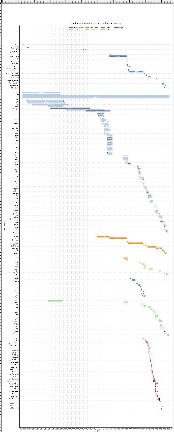

Staying under the radar lately — it's been raining here for about ten days straight. I'm still working on my Bible database, linking every significant person, event, and place to a point in time. The data itself is finished. The bad news is there's so much of it that the horizontal bar chart meant to visualize it all is still hard to read. That part is actually the easier half of the project — I just need to spend more time on it.

In the meantime, I turned the same underlying data into a quiz: Bible Timeline Quiz. And a few of my favorite short clips about God from the last few weeks, if you want something to scroll through instead of doomscrolling:
Comments